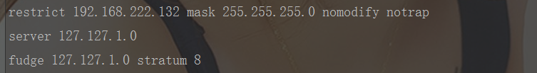
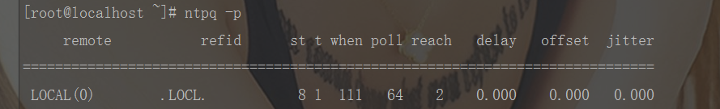
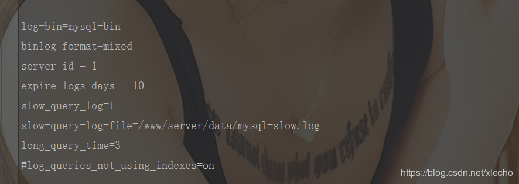
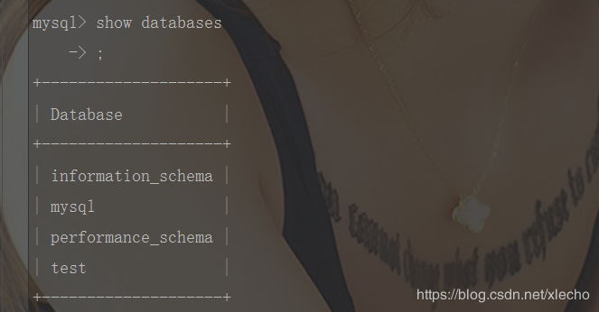
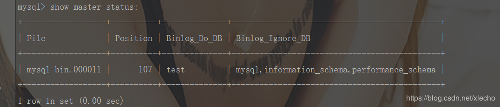
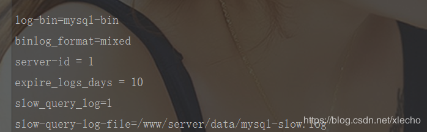
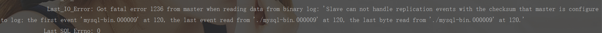
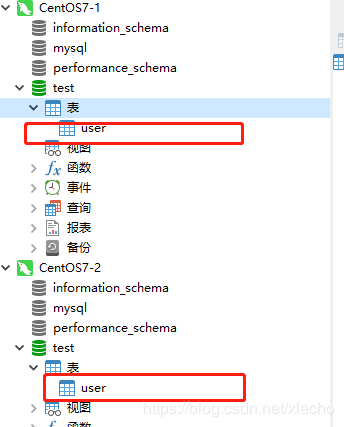

echo编辑整理，欢迎转载，转载请声明文章来源。欢迎添加echo微信(微信号：t2421499075)交流学习。 百战不败，依不自称常胜，百败不颓，依能奋力前行。——这才是真正的堪称强大！！！
本文主要为了记录MySQL搭建读写分离的操作，是本人的操作纪实，并没有详细讲解其中的原理和操作设置，如果需要详细解释的，不建议阅读。
| linux系统版本 | 对应服务器地址 | 数据库 | 版本 |
|---|---|---|---|
| CentOS7 | 192.168.222.132 | MySQL | 5.6 |
| CentOS7 | 192.168.222.133 | MySQL | 5.6 |
| CentOS7 | 192.168.222.134 | MySQL | 5.6 |
yum install ntp –yvi /etc/ntp.confrestrict 192.168.222.132 mask 255.255.255.0 nomodify notrap
server 127.127.1.0
fudge 127.127.1.0 stratum 8
systemctl start ntpdntpq -p
将我们三台服务全部做以上配置，配置完成之后，我们就可以开始设置主mysql服务器了
# 打开文件
vi /etc/my.cnf找到配置文件中的这一段，然后按照下面的配置进行修改

server-id=132 # 使用ip的后端作为我们的主服务id
log_bin=mysql-bin # 开启MySQ二进制日志系统。mysql -uroot -P3306 -p123456 -h192.168.222.132
show databases;
binlog-do-db=test # 需要同步的数据库名test，其他的数据库不同步。
binlog-ignore-db=mysql #不同步mysql系统数据库,每一个数据库对应一行。
binlog-ignore-db=information_schema
binlog-ignore-db=performance_schemaservice mysql restartshow master status;
如果显示结果和我们配置一致证明我们的主服务器配置已经成功啦！可以进行从服务器的配置
# 打开文件
vi /etc/my.cnf找到配置文件中的这一段，然后按照下面的配置进行修改

server-id=133 # 使用ip的后端作为我们的主服务id
log_bin=mysql-bin # 开启MySQ二进制日志系统。mysql -uroot -P3306 -p123456 -h192.168.222.133
show databases;binlog-do-db=test # 需要同步的数据库名test，其他的数据库不同步。
binlog-ignore-db=mysql #不同步mysql系统数据库,每一个数据库对应一行。
binlog-ignore-db=information_schema
binlog-ignore-db=performance_schemaservice mysql restart# 登录主服务器，创建一个新账号
GRANT REPLICATION SLAVE ON *.* TO 'slave'@'192.168.222.133' IDENTIFIED BY '123456';
# 刷新权限
FLUSH PRIVILEGES;change master to
master_host='192.168.222.132',
master_user='slave',
master_password='123456',
master_log_file='mysql-bin.000011',
master_log_pos=1243;start slave;show slave status \G;
出现上面这两个“Yes”就证明已经配置成功了
stop slave;reset slave;
如果出现如上报错，我们需要先停止从服务器。该问题引起的原因是我之前安装数据库的时候并没有发现他们的版本不一致导致的，停机更新版本之后再次按照下面步骤操作就好了。
# 先停掉从服务器
stop slave;
# 重置从服务器
reset slave;
# 然后排查配置的问题，重新配置一遍
change master to
master_host='192.168.222.132',
master_user='slave',
master_password='123456',
master_log_file='mysql-bin.000011',
master_log_pos=709;
# 再次启动
start slave;
# 查看服务器状态
show slave status \G;CREATE TABLE `user` (
`id` bigint(20) NOT NULL AUTO_INCREMENT COMMENT '自增id',
`user_name` varchar(255) DEFAULT NULL,
`pass_word` varchar(255) DEFAULT NULL,
PRIMARY KEY (`id`)
) ENGINE=InnoDB DEFAULT CHARSET=utf8mb4;
到这里我们已经成功啦！
我们配置第三台服务的时候，需要从新创建一个给第三台服务器访问的主服务器的账号。同时，由于我们是在本地虚拟机上安装的读写分离环境，所以每一次启动mysql或者关闭虚拟机都会导致mysql的position改变，所以我们要跟随着配置变化，每次启动读写环境前检查一下，修改配置和上面采坑解决的步骤一直。
做一个有底线的博客主